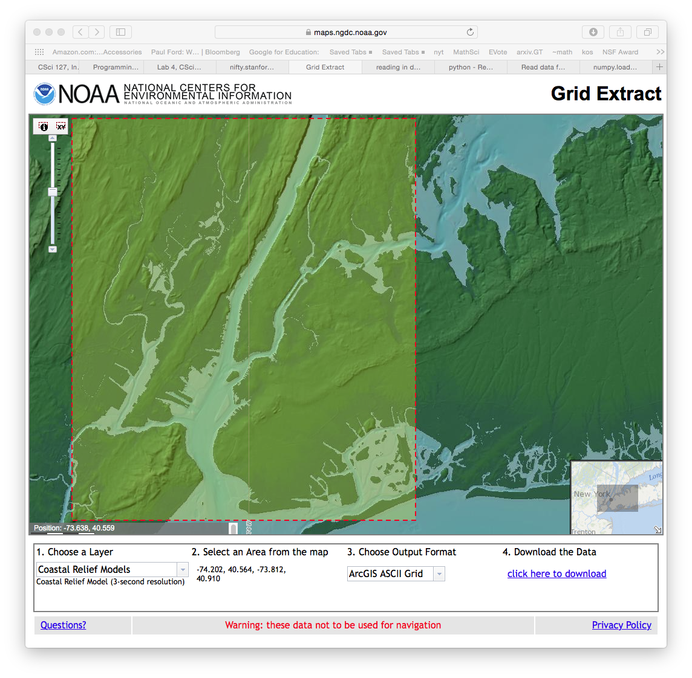
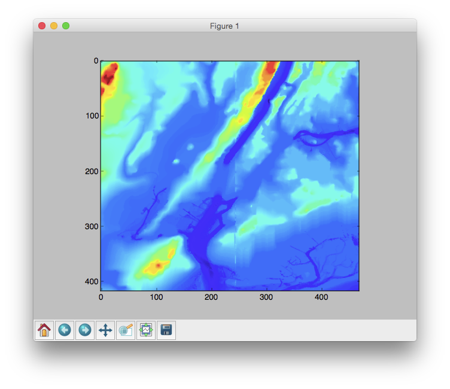
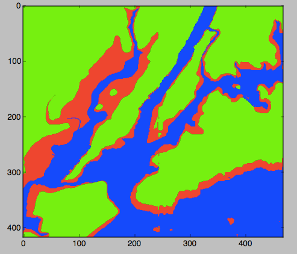

Today's lab will focus on getting numerical input from the command line and decisions in Python to make augment elevation maps.
Software tools needed: terminal (command line), web browser and Python IDLE programming
environment.
Using Python, Gradescope, and Blackboard
See Lab 1 for details on using Python, Gradescope, and Blackboard.
Getting Numbers as Input
The simplest way to get input for our programs is via the console. In Lab 2, we used the input() command to get string input from the command line.
Since Python doesn't know what you will be entering (number, words, etc.), it stores everything as a string, and leaves it to the user to convert it to what they want. For example, if we wanted a number, we need to convert the letters the user used into a number. The basic conversion functions are:
- int(): converts a string (series of letters) into the corresponding integer (whole number).
- float(): converts a string (series of letters) into the corresponding floating point number (real number).
- str(): converts a number into the corresponding sequence of letters.
Work through the examples in 2.3 Type conversion functions and
2.4 Variables. Try the quizzes at the end of the section to test your understanding.
Converter Program
Let's work through a problem that takes numerical input from the user, does a calculation, and prints out the result.
Here is the
problem:
Daniel has started to train for triathalons. Unfortunately, his bike computer only reads out distances in kilometers. Write a conversion program for him that takes as input kilometers and outputs the corresponding distance in miles.
Our first step is to design the algorithm. It follows a standard pattern:
Input, Process, Output (IPO).
In a text window in IDLE, write out what the input is, what the process is, and what the output is.
Here is one possible design:
1. Input the distance in kilometers (call it km)
2. Calculate the distance in miles as ?
3. Output miles
Above, we are missing an important part-- the formula to calculate miles from kilometers. By typing 1 km = miles into google, we find that 1 km = 0.621371 miles. So, we can add
that to our file:
#1. Input the distance in kilometers (call it km)
#2. Calculate the distance in miles as 0.621371*km
#3. Output miles
Note that we're preceding the items in our outline by '#', so they can be used as comments for our final program.
If you have not done so already, now would be a good time to save your work as the file,
km2miles.py.
Now, we are ready to convert our outline of the algorithm to Python. Begin by adding a comment to the beginning of the file:
#Name: your name
#Date: September 2017
#Converter example program from Lab 4
#1. Input the distance in kilometers (call it km)
#2. Calculate the distance in miles as 0.621371*km
#3. Output miles
Next, let's print a welcome message:
#Name: your name
#Date: September 2017
#Converter example program from Lab 4
print("Welcome to Daniel's calculator!")
#1. Input the distance in kilometers (call it km)
#2. Calculate the distance in miles as 0.621371*km
#3. Output miles
Make sure that there are no typos by saving and running your program (F5 or 'Run Module' in the Run menu).
Next, fill in the program line by line. First, ask the user for their input:
#Name: your name
#Date: September 2017
#Converter example program from Lab 4
print("Welcome to Daniel's calculator!")
#1. Input the distance in kilometers (call it km)
km = float(input('Enter distance in kilometers: '))
#2. Calculate the distance in miles as 0.621371*km
#3. Output miles
Test to make sure that the program runs. Note that it will ask for the input but since no messages after that (we still need to fill those in).
Python cares about spacing and distinguishes between spaces and tabs. If you get an error above, check that each of the lines beneath the definition is indented using a TAB.
Now, process the input (i.e. do the conversion):
#Name: your name
#Date: September 2017
#Converter example program from Lab 4
print("Welcome to Daniel's calculator!")
#1. Input the distance in kilometers (call it km)
km = float(input('Enter distance in kilometers: '))
#2. Calculate the distance in miles as 0.621371*km
miles = 0.621371*km
#3. Output miles
Save and run your program again. It will ask for input but does not yet produce output.
Finally, add the print statement that shows the output:
#Name: your name
#Date: September 2017
#Converter example program from Lab 4
print("Welcome to Daniel's calculator!")
#1. Input the distance in kilometers (call it km)
km = float(input('Enter distance in kilometers: '))
#2. Calculate the distance in miles as 0.621371*km
miles = 0.621371*km
#3. Output miles
print("The miles are", miles)
Save and run your program again. This time, it will produce output. Try it with some simple values
to make sure that it gets the right answer. For example, if you input 0 km, the output should also
be 0. If you input 1 km, you should output 0.621371 miles.
In addition to multiplication ('*'), Python has addition ('+'), subtraction ('-'), exponentation ('**'), division ('/'), and modulus/remainder ('%') built-in. See Section 2.7 in the textbook. Work through the examples and test yourself with the quiz at the bottom of textbook page.
Decisions
Python has a built-in control structure for making decisions. It's basic form is:
if test or conditional:
if true do this block
elif another test or conditional:
if this next test is true, do this block
elif yet another test or conditional:
if this yet another test is true, do this block
....
else:
only do this block, if all the previous tests failed.
The tests are expressions that evaluate to either true or false. The blocks of code can be as long as you would like-- the only caveat is the block be indented, since that indicates what's part of the block and what is not.
Complementary DNA Strands
Let's do an example to illustrate a decision, or if-statement in Python. In Lab 2, we examined the initial segment of a DNA strand for insulin in humans. DNA is double-stranded molecule. Given one strand of the molecule, we can figure out the complementary strand by the following rules:
- If the nucleotide is an A, its complement is a T.
- If the nucleotide is an C, its complement is a G.
- If the nucleotide is an G, its complement is a C.
- If the nucleotide is an T, its complement is an A.
Since if the nucleotide is an A, we don't need to check if it's also a C, G, or T (and similarly for the other possible values), we can rewrite this as:
if nucleotide == "A":
newNucleotide = "T"
elif nucleotide == "C":
newNucleotide = "G"
elif nucleotide == "G":
newNucleotide = "C"
elif nucleotide == "T":
newNucleotide = "A"
else:
print("Error: not a valid value!")
Here's a demonstration of our code:
Elevation Data & Flood Maps
For the last part of the lab, let's combine what we have learned about images and decisions to make a flood map of the New York metropolitian area. The US National Oceanic and Atmospheric Administration (NOAA) provides a searchable database of elevation data.
We used their grid extract option on the New York City region:

to download the elevations for the box bounded by the red dotted line (in 3-second resolution mode). We then removed the top lines of metadata to create a file, elevationsNYC.txt of 417 rows with 469 values in each row.
Using numpy, we can look at the data with a default 'color map' that assigns blue to smaller values in the grid (or array) and red to the larger values:
- Create a folder to hold your work (see Lab 2 for directions for doing so from the command line).
- Download elevationsNYC.txt and save to your folder (you may need to move it from your Downloads folder).
- Open IDLE, and create the following short program:
# Name: ... your name here ...
# Date: September 2017
# Takes elevation data of NYC and displays using the default color map
#Import the libraries for arrays and displaying images:
import numpy as np
import matplotlib.pyplot as plt
#Read in the data to an array, called elevations:
elevations = np.loadtxt('elevationsNYC.txt')
#Load the array into matplotlib.pyplot:
plt.imshow(elevations)
#Display the plot:
plt.show()
Save the file in your folder.
- Run your program. A graphics window should appear showing the data stored in elevations.
Comparing the NOAA image with the one you created:

you can see the Hudson River and New York Harbor (bright blue) and the ridges of the Palisades along the Hudson and mountains in Staten Island and western New Jersey in yellow and red.
We can use this data to make a flood map of New York City. When Hurricane Sandy hit New York City in 2012, sea level rose 6 feet above normal, causing extensive flooding in low lying areas (NYT map). For our flood map, we can incorporate the storm surge into our coloring scheme:
if elevation <= 0:
#Below sea level
Color the pixel blue
elif elevation <= 6:
#Below the storm surge of Hurricane Sandy (flooding likely)
Color the pixel red
else:
#Above the 6 foot storm surge and didn't flood
Color the pixel green
To give us complete control of the coloring, we will create a new array that will hold the colors for each pixel. Here's an outline of our program:
- Import the libraries to manipulate and display arrays.
- Read in the NYC data and store in the variable, elevations
- Create a new array, floodMap, to hold our colors for the map.
- For each element in elevations, make a pixel colored by the schema above.
- Load our image into pyplot.
- Display the image.
We'll use a very simple (but a bit garish) color scheme, with our "blue" being 0% red, 0% green, and 100% blue. And similarly, the "red" and the "green" we'll use will be 100% of each, 0% of the others, giving a map like:

Here's the code, implementing our outline below. Copy it into an IDLE window and run it. It expects that the file elevationsNYC.txt is in the same directory as your program.
# Name: ... your name here ...
# Date: September 2017
# Takes elevation data of NYC and displays using the default color map
#Import the libraries for arrays and displaying images:
import numpy as np
import matplotlib.pyplot as plt
#Read in the data to an array, called elevations:
elevations = np.loadtxt('elevationsNYC.txt')
#Take the shape (dimensions) of the elevations
# and add another dimension to hold the 3 color channels:
mapShape = elevations.shape + (3,)
#Create a blank image that's all zeros:
floodMap = np.zeros(mapShape)
for row in range(mapShape[0]):
for col in range(mapShape[1]):
if elevations[row,col] <= 0:
#Below sea level
floodMap[row,col,2] = 1.0 #Set the blue channel to 100%
elif elevations[row,col] <= 6:
#Below the storm surge of Hurricane Sandy (flooding likely)
floodMap[row,col,0] = 1.0 #Set the red channel to 100%
else:
#Above the 6 foot storm surge and didn't flood
floodMap[row,col,1] = 1.0 #Set the green channel to 100%
#Load the flood map image into matplotlib.pyplot:
plt.imshow(floodMap)
#Display the plot:
plt.show()
#Save the image:
plt.imsave('floodMap.png', floodMap)
What would you change to make a more fine-grained map? Namely, modify your program to color the region just above the Sandy storm surge (6 feet) and less than or equal to 20 feet the color grey (50% red, 50% green, 50% blue). Also, modify your program to not show any graphics windows (plt.show()) but instead just compute and save the map to floodMap.png. See
Programming Problem List.

More on the Command Line Interface: Relative Paths
Last lab, we introduced the Unix shell commands:
- cd: change directories (or folders),
- mkdir: make a directory,
- ls: list the contents of a directory, and
- pwd: show the path (location) of the current working directory.
We'll expand a bit on the change directory (cd) command. At a terminal window, we had typed:
mkdir thomasH
cd thomasH
pwd
which created a new directory, changed the current directory to it, and shows us what directory we were in.
In addition to changing to a directory, we can also change back to its "parent" directory by typing:
cd ../
which says go to the parent of my current location. It's often called a
relative path since your destination is relative to your current location. Typing
pwd
will show the current working directory. Using
cd ../ and
pwd, answer the following:
- What is the parent of your current directory?
- Change to the parent directory. What is the parent of your current directory?
- How many times can your repeat this?
- Which directory has no parent (i.e. "ancestor" to all the other directories?)?
This simple cd ../ gives a powerful way to navigate the directories (especially when we are working on a server without a graphical user interface or automating a process). Next lab, we will introduce absolute paths that change directories to the same place each time (independent of your current working directory.
In-class Quiz
During lab, there is a
quiz. The password to access the quiz will be given during lab. To complete the quiz, log on to Blackboard (see
Lab 1 for details on using Blackboard).
What's Next?
If you finish the lab early, now is a great time to get a head start on the programming problems due early next week. There's instructors to help you, and you already have Python up and running. The Programming Problem List has problem descriptions, suggested reading, and due dates next to each problem.